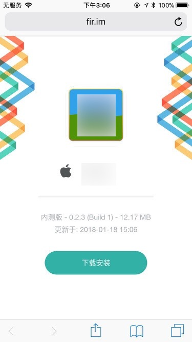
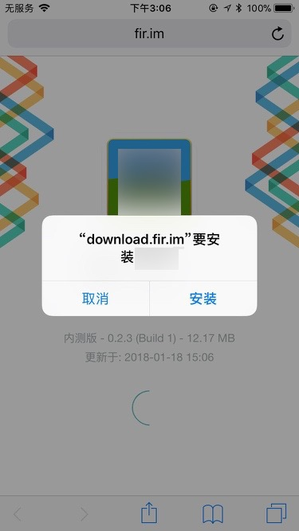
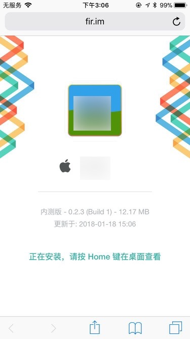
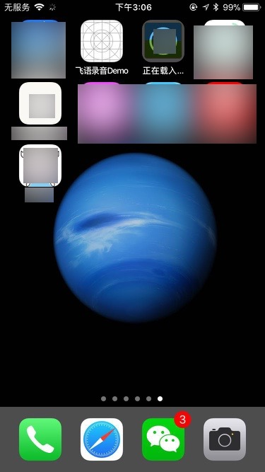
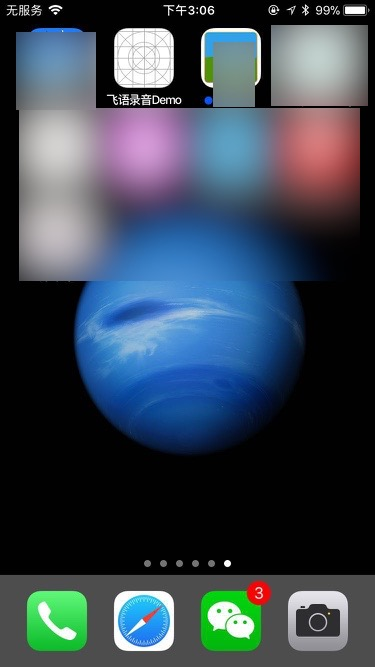
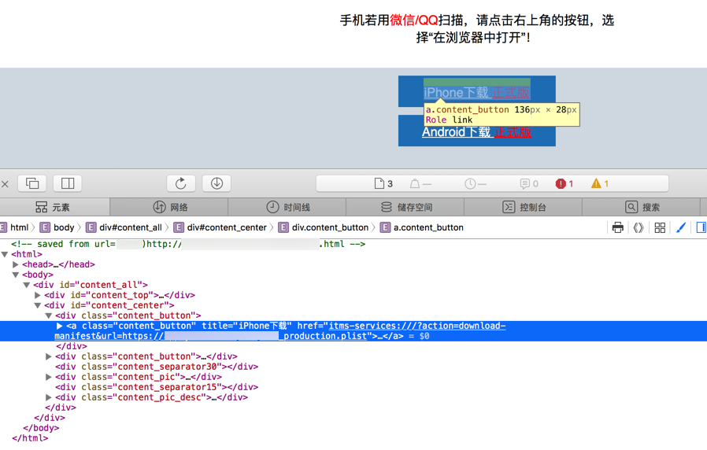
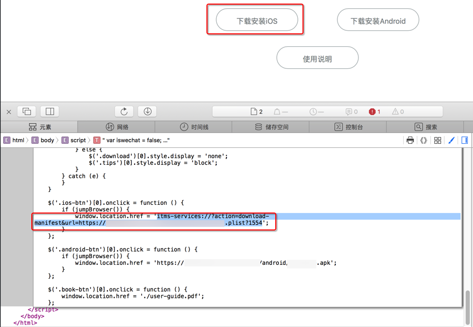

iOS的APP的安装和使用
此处介绍iOS的APP的安装和使用的基本知识，以便于让iOS的APP开发和iOS的APP的使用人员，对于APP的不同版本，安装方法，有个基本的了解。
iOS的APP的发布模式
如之前已经说的，其实有几种模式：
- AdHoc
- 企业版
- OTA
- AppStore
下面分别介绍具体安装方式
AdHoc
iOS打包AdHoc的目的是用于小范围的内部测试。
所以苹果要去打包AdHoc时，需要实现把相关的每个iOS设备的UDID，添加进去，打包后，只有加了UDID的iOS设备，才能安装AdHoc版本。
打包出来的也是ipa，上传到别的地方，即可下载。
fir.im上的AdHoc版本
比如上传到fir.im上，比如：
xxx Production生产版 iOS
然后别人去用iPhone中的Safari去打开对应地址

然后点击下载按钮，会弹出提示：

弹出提示会显示出域名
对于此处弹出的提示中的download.fir.im，其实就是对应的之前提到的plist文件所在的https的服务器的域名/IP。
点击确定后，页面上会提示：正在安装，请按Home键在桌面查看：

然后iPhone中按Home健，回到桌面，找到正在安装的APP：

稍等片刻，即可安全完毕：

下载速度取决于实际情况
对于此处的fir.im中的，是针对国内网络优化过的速度，所以下载很快的。
但是如果是其他地方的下载这种ipa的话，有时候会比较慢，往往是国外服务器的话，速度一般不是很理想。
企业版
fir.im上的企业版
自己的公司官网的企业版的OTA版
其实也可以让自己的公司：
- 弄一个Web服务器
- 把iOS打包出来的plist和ipa和logo图片，都放到对应的目录下
- 就有了对应的plist文件的地址了
- 然后
- 再去弄一个HTML页面
- 其中包含对应的：以
itms-services开头的、plist结尾的地址 - 再弄一个
按钮button或（a的href）的链接，点击后去打开上面这个地址
- 其中包含对应的：以
- 或者是iOS的app代码内部直接open以这个
itms-services开头的、plist结尾的地址- 也会直接调用iOS的Safari去打开此地址
- 从而实现自动下载ipa并安装的效果
- 即：实现自动升级iOS的app的效果 = 不用打开浏览器而自动下载ipa并安装的效果
- 相关参考代码：
[[UIApplication sharedApplication]openURL:[NSURL URLWithString:[NSString stringWithFormat:@"itms-services://?action=download-manifest&url=https://xxx/yyy.plist"]]];
- 也会直接调用iOS的Safari去打开此地址
- 再去弄一个HTML页面
- 把iOS打包出来的plist和ipa和logo图片，都放到对应的目录下
https的Web服务器的ipa+plist+html页面实现发布企业版的OTA版的示例
示例1: html中点击按钮跳转href的itms-services地址
如图：

其实内部都是一个itms-services开头的、plist结尾的地址，比如：
itms-services:///?action=download-manifest&url=https://xxx.yyy/zzz/aaa_production.plist
由此，点击对应的按钮后，即可直接或间接的调用iOS的Safari浏览器去解析并验证，通过后，才会直接去下载对应的ipa，安装对应的iOS的APP。
示例2: html中点击按钮执行js去打开itms-services的地址
如图：

内部的web服务器中存放这对应的logo图片、android的apk文件、iOS的ipa文件等等：
[xxx@yyy html]$ pwd
/usr/share/nginx/html
[xxx@yyy html]$ ll
total 3864
-rwxrwxrwx. 1 root root 537 May 31 2016 50x.html
drwxrwxrwx. 2 useradmin useradmin 4096 Jan 17 11:45 android
-rw-r--r--. 1 useradmin useradmin 661 Aug 15 2016 index1.html
drwxrwxrwx. 2 useradmin useradmin 4096 Jan 17 11:43 ios
drwxrwxrwx. 2 useradmin useradmin 85 Aug 10 2016 logo
-rwxrwxrwx. 1 useradmin useradmin 3369375 Aug 10 2016 manual.pdf
drwxrwxr-x. 2 useradmin useradmin 40 Jan 24 2017 test
-rwxrwxrwx. 1 useradmin useradmin 324069 Aug 10 2016 user-guide1.pdf
-rw-r--r--. 1 useradmin useradmin 172166 Aug 10 2016 user-guide.pdf
[xxx@yyy html]$ ll ios/manifest.plist
-rw-r--r--. 1 useradmin useradmin 1111 Jan 9 05:46 ios/manifest.plist
[xxx@yyy html]$ ll ios/zzz.ipa
-rw-r--r--. 1 useradmin useradmin 23998958 Jan 9 05:46 ios/zzz.ipa
[xxx@yyy html]$ ll logo/
total 36
-rwxrwxrwx. 1 useradmin useradmin 10474 Aug 10 2016 zzz_180x180.png
-rwxrwxrwx. 1 useradmin useradmin 19555 Jul 12 2016 zzz_512x512.png
-rwxrwxrwx. 1 useradmin useradmin 2537 Jul 12 2016 zzz_57x57.png
[xxx@yyy html]$ ll android/zzz.apk
-rw-r--r--. 1 useradmin useradmin 4773193 Jan 17 03:25 android/zzz.apk